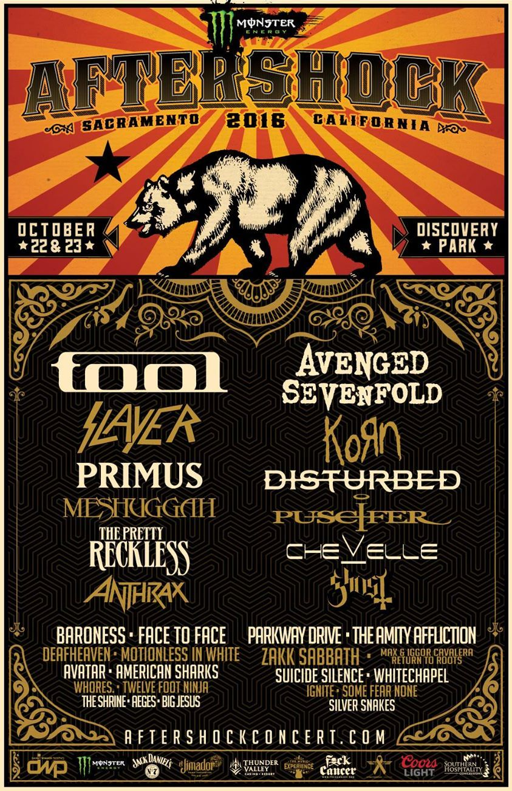
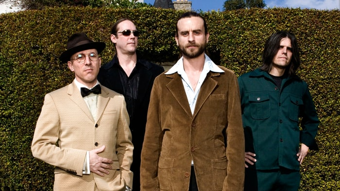

Festival Dates
| October 22, 2016 | |
|---|---|
| Sacrmento | CA | October 23, 2016 |
| Sacramento | CA |
2016 Line up

“We’re excited to give fans a once in a lifetime opportunity to see Tool, Avenged Sevenfold, Primus, Slayer, Korn, Disturbed and the rest of this great lineup all together during this special weekend. Discovery Park is such a unique venue that allows us to put on an experience on a grand scale, but in an intimate setting that sets Aftershock apart," says Monster Energy Aftershock founder and producer Danny Wimmer of Danny Wimmer Presents.
Main Attractions
|  | Tool is an American rock band from Los Angeles, California. Formed in 1990, the group's line-up includes drummer Danny Carey, guitarist Adam Jones, and vocalist Maynard James Keenan. Tool has won three Grammy Awards, performed worldwide tours, and produced albums topping the charts in several countries. |

|
Avenged Sevenfold (sometimes abbreviated as A7X) is an American heavy metal band from Huntington Beach, California, formed in 1999. Avenged Sevenfold is known for its diverse rock sound and dramatic imagery in album covers and merchandise. |